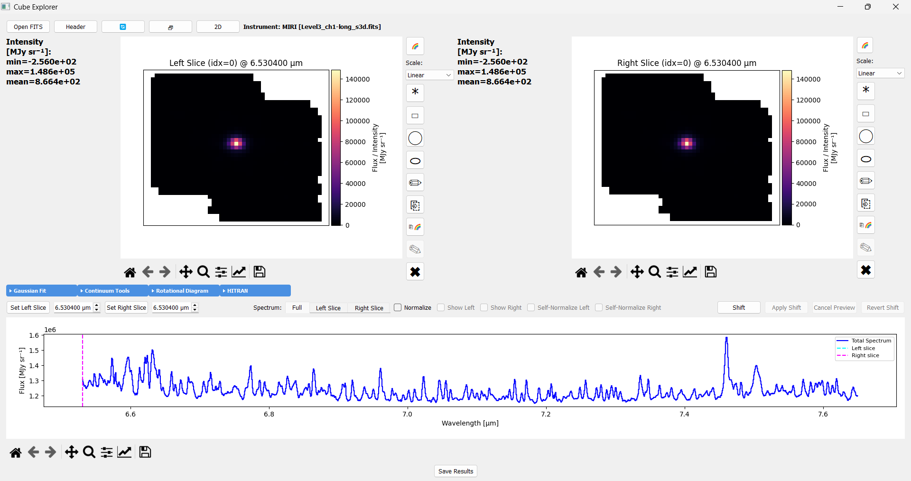

GUI Overview
The main window is built around two mirrored slice panels, Left and Right, that drive one shared spectrum panel below them – setting a slice or selecting a region on either side updates that side’s own analysis and spectrum tab independently of the other.
Main Window Layout

The window loaded above (a MIRI cube): Left and Right intensity maps at top, each with its own running stats (min/max/mean/sum/std) and cursor readout; the Region / Export / Gaussian Fit / Continuum Tools / Lines & Fit tool groups in the bar below them; and the spectrum panel with its Set Slice / tab / Normalize / Shift controls and plot at the bottom.
1. Top Bar (Top)
The top bar has three sets of buttons. Thin lines separate the sets.
Open FITS: browse for and load a FITS cube or 2D image; the instrument is auto-detected from the header
Header: view the FITS header of the loaded file(s)
Refresh (arrow icon): asks “Reset the view?” first. If you confirm, it clears every plot, region selection, normalization, and Gaussian fit, then reloads the spectrum from the original data
New window (icon): open a second, independent Cube Explorer window
Rotational Diagram: open the rotational diagram analyzer
2D: open the 2D FITS Dual Viewer
The name of the loaded instrument shows at the right end of the bar.
2. Main Viewing Area (Top Center)
Displays the currently selected wavelength left and right slices:
Intensity Map: Color-coded flux data with statistics
Region Selection: Select a region of a slice for analysis. Each slice has its own row of icon buttons:
Point, Rectangle, Circle, Ellipse, Freehand: the five shape tools
Edit shape: drag or resize the placed region
Clear: remove the region
Copy (menu): copy the selection, the colormap, or the scale and range from the other slice
Colormap: choose a colormap
Scale: choose the scale (Linear, Log, or Power) and the color range
Hover over an icon to read its tooltip. Saving a slice or a region is done from the Region and Export tool groups below, not from a button here (Selecting Regions).
3. Spectrum Panel (Bottom Center)
Shows the 1D spectrum, with its axes in flux and wavelength. Two rows of controls sit above the plot: a row of collapsible analysis tool groups, and a row of display/navigation controls that are always visible.
Tool Groups (top row)
Group |
What it does |
|---|---|
Region |
Save a region as sky coordinates, or import a region saved on another cube (Selecting Regions) |
Export |
Save a slice, a masked slice, or a masked cube as FITS (Selecting Regions) |
Gaussian Fit |
Fit lines, mark noise regions, and build full-cube parameter maps |
Continuum Tools |
Fit and subtract the continuum, automatically or from custom anchor points |
Lines & Fit |
Set the wavelength range (λ min and λ max, in µm). Fetch HITRAN lines or import your own, show them on the spectrum, mark contaminating lines, then run Multi-Gauss or Flux Map |
Display Controls (bottom row)
Control |
What it does |
|---|---|
Set Left Slice / Set Right Slice |
Click a slice to set the left or right wavelength from that pixel |
Full / Left Region / Right Region tabs |
Switch which spectrum is displayed. Full always shows the whole cube’s spectrum; Left Region and Right Region each show only that side’s own selected region (nothing, if no region is selected there) |
Show Left / Show Right |
While on the Full tab, overlay the Left and/or Right selection’s own spectrum on top of the Full spectrum for comparison |
Normalize |
Divide every displayed spectrum by the Full spectrum’s own peak |
Self-Normalize Left / Self-Normalize Right |
While Normalize is on, normalize that side to its own peak instead of Full’s, useful for studying a region’s line shape independent of its contribution to the total |
Shift / Apply Shift / Cancel Preview / Revert Shift |
Preview a Doppler shift on the active tab’s spectrum, then apply, cancel, or revert it |
The Save Spectrum button sits alone under the spectrum plot. It saves the displayed spectrum as a text file (Exporting Data).
Getting Help
Every button has a tooltip – hover over one if you’re not sure what it does.
Next Steps
Each tool group above has its own dedicated page with the full workflow:
1D Spectrum Fitting and Pixel-by-Pixel Cube Fitting for the Gaussian Fit group
Continuum Subtraction for the Continuum Tools group
Rotational Diagram for the Rotational Diagram button in the top bar
Flux Extraction for the Lines & Fit group’s fetch/plot workflow
Selecting Regions and Spectrum Display for the display controls row (Set Slice, Full/Left Region/Right Region tabs, Normalize, Shift)